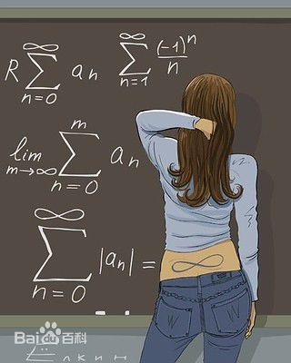

文章一级标题
文章二级标题
kisshot 2016 12-11:23:00
数学起源于人类早期的生产活动，古巴比伦人从远古时代开始已经积累了一定的数学知识，并能应用实际问题．从数学本身看，他们的数学知识也只是观察和经验所得，没有综合结论和证明，但也要充分肯定他们对数学所做出的贡献.
基础数学的知识与运用是个人与团体生活中不可或缺的一部分．其基本概念的精炼早在古埃及、美索不达米亚及古印度内的古代数学文本内便可观见．从那时开始，其发展便持续不断地有小幅度的进展．但当时的代数学和几何学长久以来仍处于独立的状态．
代数学可以说是最为人们广泛接受的“数学”．可以说每一个人从小时候开始学数数起，最先接触到的数学就是代数学．而数学作为一个研究“数”的学科，代数学也是数学最重要的组成部分之一．几何学则是最早开始被人们研究的数学分支.

直到16世纪的文艺复兴时期，笛卡尔创立了解析几何，将当时完全分开的代数和几何学联系到了一起．从那以后，我们终于可以用计算证明几何学的定理；同时也可以用图形来形象的表示抽象的代数方程．而其后更发展出更加精微的微积分．
数学被应用在很多不同的领域上，包括科学、工程、医学和经济学等．数学在这些领域的应用一般被称为应用数学，有时亦会激起新的数学发现，并促成全新数学学科的发展．数学家也研究纯数学，也就是数学本身，而不以任何实际应用为目标．虽然有许多工作以研究纯数学为开端，但之后也许会发现合适的应用．